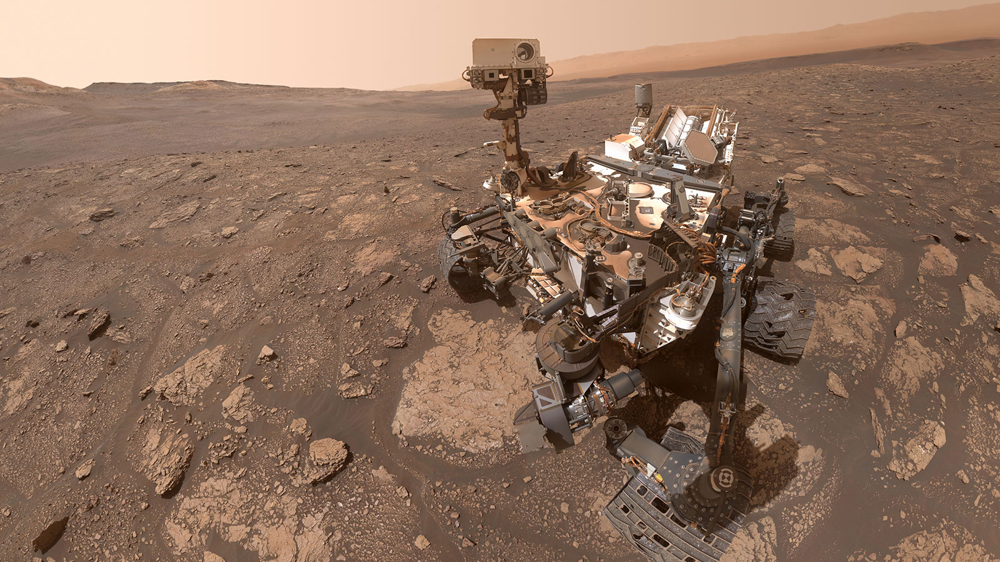

There are currently two rovers in operation on the surface of Mars, operated by NASA Jet Propulsion Laboratory: Curiosity and Perseverance. Curiosity landed on Mars in 2012, and Perseverance touched down in 2021, accompanied by the first Martian helicopter, Ingenuity.
